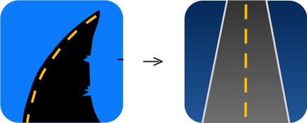
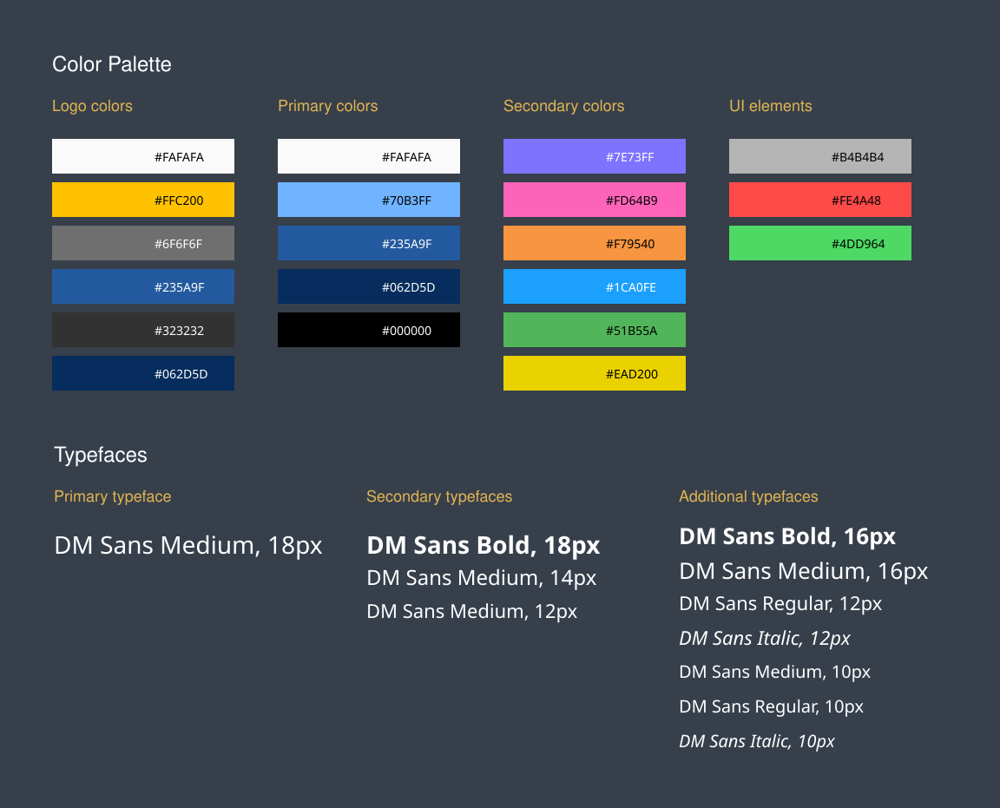

On The Way
End-to-end product design for a route-aware navigation experience
Overview
On The Way is a wayfinding product that helps drivers discover and add stops along their existing route while keeping their main trip intact.
I designed and built the app end-to-end, from competitive research and requirements gathering through interaction design, UI, and building an Angular prototype using the Google Maps API.
The core concept is simple: Help drivers get from point A to point B, and add stops without straying from the original route.
The opportunity
The idea was born from a real pain point. On a trip to the beach, my family used one phone for directions to our hotel, and a different phone to find stops like gas, convenience stores, and dessert shops. Various GPS apps recommended places behind us, which meant turning around and adding time to our journey.
I framed this experience as a design problem: Recommend only upcoming stops, and keep every stop close to the primary route. I later had the opportunity to turn the concept into a working product while building an Angular application that incorporated maps.
Understanding the problem
Competitive analysis
I started with a competitive analysis of Apple Maps, Google Maps, and Waze to find where market-leading GPS products were lacking. Apple Maps and Waze only allow one added stop. Apple Maps blocks address search when adding a stop, limiting people to categories like cafes, gas, and banks. Across all three apps, “end navigation” ends the entire trip instead of removing only detours.
Those observations revealed the need for more flexibility when choosing stops, and a need to preserve the user’s original trip despite temporary detours.
Contextual use scenarios
To define potential users, I wrote contextual use scenarios and built three personas: a student heading to campus, a father on a family road trip, and a professional driving to a meeting. Although the contexts differed, the underlying need was consistent: people wanted to accomplish something along the way without compromising the trip they had already planned.

Product requirements
My competitive analysis observations made it clear why adding an extra stop still forces users into workarounds like opening a second phone to get a separate set of directions. The contextual use scenarios revealed shared needs, which I synthesized into four product requirements:
- Preserve the primary trip: Adding or removing a stop shouldn’t restart navigation.
- Support multiple stops: Drivers should be able to make several stops without rebuilding the trip.
- Make search flexible: Users should be able to search for a specific place, not just choose from predefined categories.
- Route-aware recommendations: Proximity isn’t useful if the stop is behind the driver.
Shaping the experience
I used Erin’s scenario to test the requirements against a complete trip: entering a destination, saving it to favorites, adding multiple stops along the route, and continuing to the original destination when stops were removed.
Building the visual system
I created a lightweight visual system to keep the experience consistent across trip planning, active navigation, and temporary detours.


On The Way: Discover what lies ahead
The final experience focuses on one core principle: Discover what lies ahead without sacrificing the trip you already started.
- Discover: Recommendations are surfaced based on their relationship to the existing route.
- Add: User can add a stop without replacing their original destination.
- Detour: The temporary stop becomes the immediate navigation target.
- Continue: Completing or removing stops returns the user to the primary trip.
Designing with constraints
The implementation differs slightly from the original design because of limitations with the Google Maps API. The search experience required additional interaction to complete a search, and the search bar could not be integrated directly into the interface as intended, it needed to live within the map itself. Styling the stop-overview tooltips also presented technical constraints.
The resulting product isn’t a perfect replica of the original design, but it preserves the underlying user goal of flexible, route-aware recommendations.
Reflection
On The Way gave me the opportunity to own a product end-to-end. I turned a messy, real-world frustration into a problem statement, justified requirements via competitive analysis and use case scenarios, prototyped a critical user flow, and adapted the design when engineering constraints revealed themselves.
The project reinforced an important lesson: constraints are often opportunities to reconsider the design instead of changing the requirements.
What I’d validate next
- Validate the route recommendation model with drivers in realistic contexts.
- Investigate accessibility and hands-free interaction.
- Measure whether route-aware recommendations actually reduce detour time.
- Revisit the information architecture after observing real-world use.